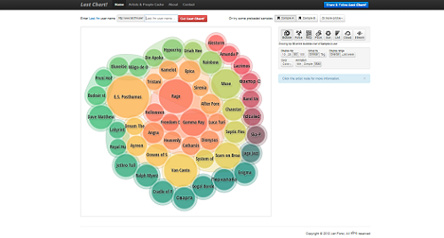
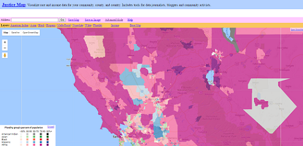

LastChart is a web application that takes a user's music listening history based off of data from their last.fm account. It shows the different musicians and artists that a user listens to and uses different sized bubbles to indicate how often a user listens to an artist, with bigger bubbles meaning that a user listens to them more than an artist with smaller bubbles. In addition to formatting the data with bubbles, the interface has different options to visualize the data in different ways as well, including a radial sun, where each 'ray' is relatively sized, a map, where each artist is like a small country, and a word cloud, where larger words mean more frequently listened to artists. The color scheme of the visualization also corresponds to the genre of a particular artist, which provides the user another layer of insight for their listening data. Overall, I think that this interface is an effective way for users to see their listening histories by having different ways to visualize it, using a color scheme that provides secondary insights, and for being legible and readable.
PROJECT 2: Justice Map
Justice Map is a data visualization that displays information about a community's race and income data. It takes data from the 2010 Census and the 2011-2015 American Community Survey and imposes that information on tile map layers on a Google Map. Because it uses Google Maps, I found it easy to use based on my prior experience. Also, the size and shapes of each color block, representing a different race, seem to be precise and accurate, which can be useful for times when I want to see an accurate visual representation of data, and not just relative comparisons. There is also a color scheme to differentiate between different blocks, however, I found that at times it can be jarring to look at, since the colors are all bright and competing with each other, especially in bigger cities where there is more variation in demographics. One feature that I think is interesting is how the blocks can further divide the more a user zooms in. Overall, I think that Justice Map does a good job at presenting precise information; however, I think that design principles could be explored more in order to bring a sense of cohesion to the project and to make it easier for the user to take in the data.